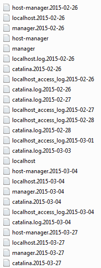

En el cas concret que s’està utilitzant el fitxer de log està ubicat a:
C:\openkm-6.4.14\tomcat\logs
Aquí apareixen un seguit de fitxers depenent de l’ús del programa tal com es mostra a la següent figura:

Si obrim el fitxer:
catalina.log.2015-02-27
part de la informació que apareix és:
2015-02-27 13:20:48,735 [http-bio-0.0.0.0-8080-exec-9] INFO com.openkm.servlet.frontend.TaskManagerServlet- Task: {id=0, subject=Reunió amb tècnics, tenant=0, owner=okmAdmin, description=Repàs d'incidències, start=Wed Jul 01 09:15:00 CEST 2015, end=Wed Jul 01 09:15:00 CEST 2015, repeatGroup=1, reminderStartValue=0, reminderStartUnit=m, reminderEndValue=0, reminderEndUnit=m, status=Default, project=Default, progress=0, users=[Tecnic_matins], roles=[ROLE_USER], documents=[], folders=[], mails=[], records=[], hasStartHour=true, hasEndHour=true}
2015-02-27 13:20:48,735 [http-bio-0.0.0.0-8080-exec-9] INFO com.openkm.servlet.frontend.TaskManagerServlet- Current: Wed Jul 01 09:15:00 CEST 2015
2015-02-27 13:20:48,738 [http-bio-0.0.0.0-8080-exec-9] INFO com.openkm.servlet.frontend.TaskManagerServlet- Task: {id=0, subject=Reunió amb tècnics, tenant=0, owner=okmAdmin, description=Repàs d'incidències, start=Wed Jul 08 09:15:00 CEST 2015, end=Wed Jul 08 09:15:00 CEST 2015, repeatGroup=1, reminderStartValue=0, reminderStartUnit=m, reminderEndValue=0, reminderEndUnit=m, status=Default, project=Default, progress=0, users=[Tecnic_matins], roles=[ROLE_USER], documents=[], folders=[], mails=[], records=[], hasStartHour=true, hasEndHour=true}
2015-02-27 13:20:48,738 [http-bio-0.0.0.0-8080-exec-9] INFO com.openkm.servlet.frontend.TaskManagerServlet- Current: Wed Jul 08 09:15:00 CEST 2015
2015-02-27 13:20:48,741 [http-bio-0.0.0.0-8080-exec-9] INFO com.openkm.servlet.frontend.TaskManagerServlet- Task: {id=0, subject=Reunió amb tècnics, tenant=0, owner=okmAdmin, description=Repàs d'incidències, start=Wed Jul 15 09:15:00 CEST 2015, end=Wed Jul 15 09:15:00 CEST 2015, repeatGroup=1, reminderStartValue=0, reminderStartUnit=m, reminderEndValue=0, reminderEndUnit=m, status=Default, project=Default, progress=0, users=[Tecnic_matins], roles=[ROLE_USER], documents=[], folders=[], mails=[], records=[], hasStartHour=true, hasEndHour=true}
2015-02-27 13:20:48,741 [http-bio-0.0.0.0-8080-exec-9] INFO com.openkm.servlet.frontend.TaskManagerServlet- Current: Wed Jul 15 09:15:00 CEST 2015
2015-02-27 13:20:48,744 [http-bio-0.0.0.0-8080-exec-9] INFO com.openkm.servlet.frontend.TaskManagerServlet- Task: {id=0, subject=Reunió amb tècnics, tenant=0, owner=okmAdmin, description=Repàs d'incidències, start=Wed Jul 22 09:15:00 CEST 2015, end=Wed Jul 22 09:15:00 CEST 2015, repeatGroup=1, reminderStartValue=0, reminderStartUnit=m, reminderEndValue=0, reminderEndUnit=m, status=Default, project=Default, progress=0, users=[Tecnic_matins], roles=[ROLE_USER], documents=[], folders=[], mails=[], records=[], hasStartHour=true, hasEndHour=true}
2015-02-27 13:20:48,744 [http-bio-0.0.0.0-8080-exec-9] INFO com.openkm.servlet.frontend.TaskManagerServlet- Current: Wed Jul 22 09:15:00 CEST 2015
2015-02-27 13:20:48,746 [http-bio-0.0.0.0-8080-exec-9] INFO com.openkm.servlet.frontend.TaskManagerServlet- Task: {id=0, subject=Reunió amb tècnics, tenant=0, owner=okmAdmin, description=Repàs d'incidències, start=Wed Jul 29 09:15:00 CEST 2015, end=Wed Jul 29 09:15:00 CEST 2015, repeatGroup=1, reminderStartValue=0, reminderStartUnit=m, reminderEndValue=0, reminderEndUnit=m, status=Default, project=Default, progress=0, users=[Tecnic_matins], roles=[ROLE_USER], documents=[], folders=[], mails=[], records=[], hasStartHour=true, hasEndHour=true}
2015-02-27 13:20:48,746 [http-bio-0.0.0.0-8080-exec-9] INFO com.openkm.servlet.frontend.TaskManagerServlet- Current: Wed Jul 29 09:15:00 CEST 2015
2015-02-27 13:20:48,749 [http-bio-0.0.0.0-8080-exec-9] INFO com.openkm.servlet.frontend.TaskManagerServlet- Task: {id=0, subject=Reunió amb tècnics, tenant=0, owner=okmAdmin, description=Repàs d'incidències, start=Wed Aug 05 09:15:00 CEST 2015, end=Wed Aug 05 09:15:00 CEST 2015, repeatGroup=1, reminderStartValue=0, reminderStartUnit=m, reminderEndValue=0, reminderEndUnit=m, status=Default, project=Default, progress=0, users=[Tecnic_matins], roles=[ROLE_USER], documents=[], folders=[], mails=[], records=[], hasStartHour=true, hasEndHour=true}
2015-02-27 13:20:48,749 [http-bio-0.0.0.0-8080-exec-9] INFO com.openkm.servlet.frontend.TaskManagerServlet- Current: Wed Aug 05 09:15:00 CEST 2015
2015-02-27 13:20:48,752 [http-bio-0.0.0.0-8080-exec-9] INFO com.openkm.servlet.frontend.TaskManagerServlet- Task: {id=0, subject=Reunió amb tècnics, tenant=0, owner=okmAdmin, description=Repàs d'incidències, start=Wed Aug 12 09:15:00 CEST 2015, end=Wed Aug 12 09:15:00 CEST 2015, repeatGroup=1, reminderStartValue=0, reminderStartUnit=m, reminderEndValue=0, reminderEndUnit=m, status=Default, project=Default, progress=0, users=[Tecnic_matins], roles=[ROLE_USER], documents=[], folders=[], mails=[], records=[], hasStartHour=true, hasEndHour=true}
2015-02-27 13:20:48,752 [http-bio-0.0.0.0-8080-exec-9] INFO com.openkm.servlet.frontend.TaskManagerServlet- Current: Wed Aug 12 09:15:00 CEST 2015
2015-02-27 13:20:48,754 [http-bio-0.0.0.0-8080-exec-9] INFO com.openkm.servlet.frontend.TaskManagerServlet- Task: {id=0, subject=Reunió amb tècnics, tenant=0, owner=okmAdmin, description=Repàs d'incidències, start=Wed Aug 19 09:15:00 CEST 2015, end=Wed Aug 19 09:15:00 CEST 2015, repeatGroup=1, reminderStartValue=0, reminderStartUnit=m, reminderEndValue=0, reminderEndUnit=m, status=Default, project=Default, progress=0, users=[Tecnic_matins], roles=[ROLE_USER], documents=[], folders=[], mails=[], records=[], hasStartHour=true, hasEndHour=true}
2015-02-27 13:20:48,755 [http-bio-0.0.0.0-8080-exec-9] INFO com.openkm.servlet.frontend.TaskManagerServlet- Current: Wed Aug 19 09:15:00 CEST 2015
2015-02-27 13:20:48,757 [http-bio-0.0.0.0-8080-exec-9] INFO com.openkm.servlet.frontend.TaskManagerServlet- Task: {id=0, subject=Reunió amb tècnics, tenant=0, owner=okmAdmin, description=Repàs d'incidències, start=Wed Aug 26 09:15:00 CEST 2015, end=Wed Aug 26 09:15:00 CEST 2015, repeatGroup=1, reminderStartValue=0, reminderStartUnit=m, reminderEndValue=0, reminderEndUnit=m, status=Default, project=Default, progress=0, users=[Tecnic_matins], roles=[ROLE_USER], documents=[], folders=[], mails=[], records=[], hasStartHour=true, hasEndHour=true}
2015-02-27 13:20:48,758 [http-bio-0.0.0.0-8080-exec-9] INFO com.openkm.servlet.frontend.TaskManagerServlet- Current: Wed Aug 26 09:15:00 CEST 2015
on es pot veure que l’usuari que ha generat una tasca (Task) amb l’etiqueta “Reunió amb tècnics” ha estat l’adminiatrador (owner=okmAdmin). El que es farà en aquesta tasca es veu a description (“Repàs d’incidències”) i començarà la tasca el start=Wed Aug 26 09:15:00 CEST 2015 i finalitzarà el end=Wed Aug 26 09:15:00 CEST 2015.
Task: {id=0, subject=Reunió amb tècnics, tenant=0, owner=okmAdmin, description=Repàs d'incidències, start=Wed Aug 26 09:15:00 CEST 2015, end=Wed Aug 26 09:15:00 CEST 2015, repeatGroup=1, reminderStartValue=0, reminderStartUnit=m, reminderEndValue=0, reminderEndUnit=m, status=Default, project=Default, progress=0, users=[Tecnic_matins], roles=[ROLE_USER], documents=[], folders=[], mails=[], records=[], hasStartHour=true, hasEndHour=true}
En aquest exemple veiem que la reunió no marca duració, cosa que pot significar que s’ha creat erròniament, però potser més important és que el camp mails=[] no està omplert; si ens comuniquen una incidència que les persones convocades no han rebut la convocatòria per correu ja sabem que el correu no s’ha enviat perquè no s’han indicat els remitents.